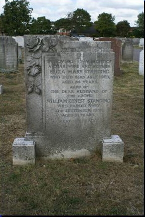

Eliza Mary Standing (née Parr) 1885 - 1969
[ Home ] | [ Calendar ] | [ Surnames Index ] | [ Census Index ] | [ Family History ]Eliza Parr, the wife of William Ernest Standing (the third cousin twice-removed on the father's side of Nigel Horne), was born in Stepney, London, England on May 19, 18851,2, was baptized in Limehouse, London, England on Jun 17, 1885 and married William (a laundry man with whom she had 7 children: Victor William, Ernest Douglas, Stephen Earling, Muriel Alice, Stephen Lawrence, Bernard Walter and Brenda Margaret) in Ilford, London, England on Aug 29, 19143.
During her life, she was living at 5 Aurelia Cottages, Ley Street in Ilford in 19254 and on Sep 29, 1939.
She died on Jul 23, 1969 in Ilford2 and was buried there at Barkingside Garden of Rest, Longwood Gardens after Jul 23, 1969.
Children
- Victor William was born on May 10, 1915
- Ernest Douglas was born on Feb 10, 1917
- Stephen Earling was born in 1921
- Muriel Alice was born c. Aug 1921
- Stephen Lawrence was born c. May 1923
- Bernard Walter was born on Sep 7, 1925
- Brenda Margaret was born on Jan 9, 1927
Citations
- England & Wales deaths 1837-2007 - Findmypast
- England & Wales, Death Index: 1984-2005 Online publication - Provo, UT, USA: The Generations Network, Inc., 2007.Original data - General Register Office. England and Wales Civil Registration Indexes. London, England: General Register Office. © Crown copyright. Published by permission of the Cont
- England & Wales, FreeBMD Marriage Index: 1837-1915 Online publication - Provo, UT, USA: The Generations Network, Inc., 2006.Original data - General Register Office. England and Wales Civil Registration Indexes. London, England: General Register Office. © Crown copyright. Published by permission of the Cont
- From the birth certificate of her son, Bernard
Media
Eliza Mary Parr

Eliza Mary Parr
William Standing - Eliza Parr

William Standing - Eliza Parr - gravestone

Eliza Mary Parr (2)
.jpg)
Eliza Mary Parr - baptism

1939 Register Transcription - TNA-R39-1088-1088B-002-28
England & Wales deaths 1837-2007 - BMD/D/1969/3/AZ/001009/083
England & Wales marriages 1837-2008 - BMD/M/1914/3/AZ/000923/121
England & Wales births 1837-2006 - BMD/B/1885/2/AZ/000432/057
Family Tree

Generated by ged2site. Last updated on Jun 11, 2024